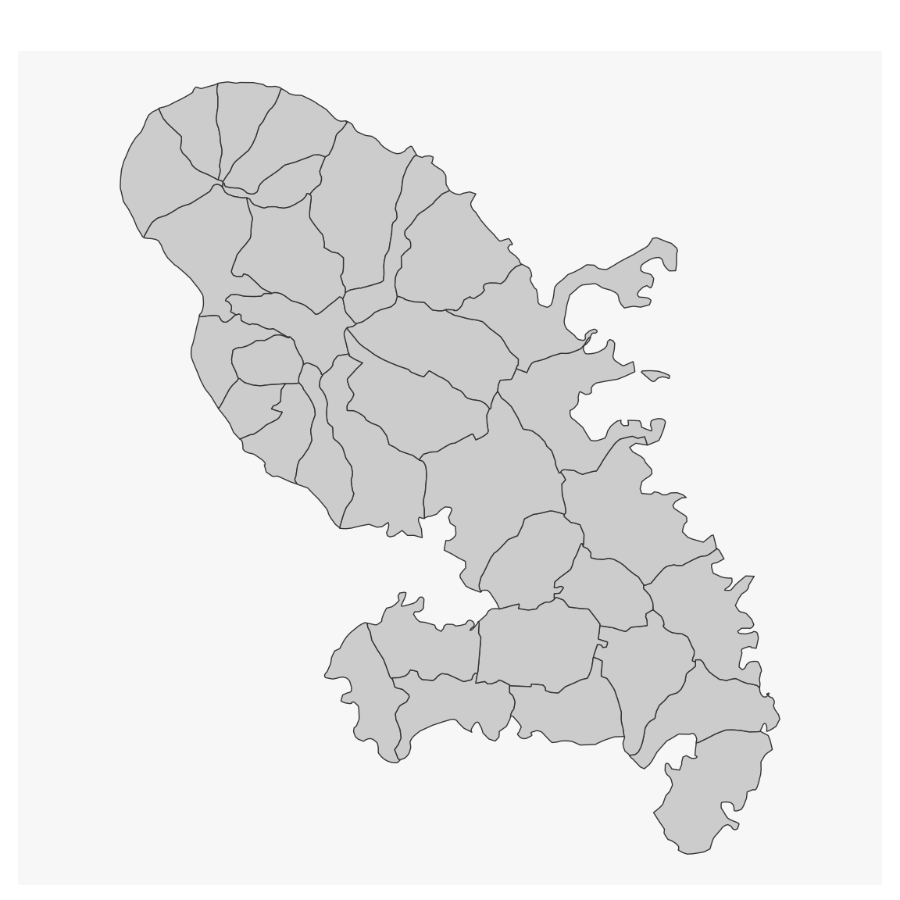
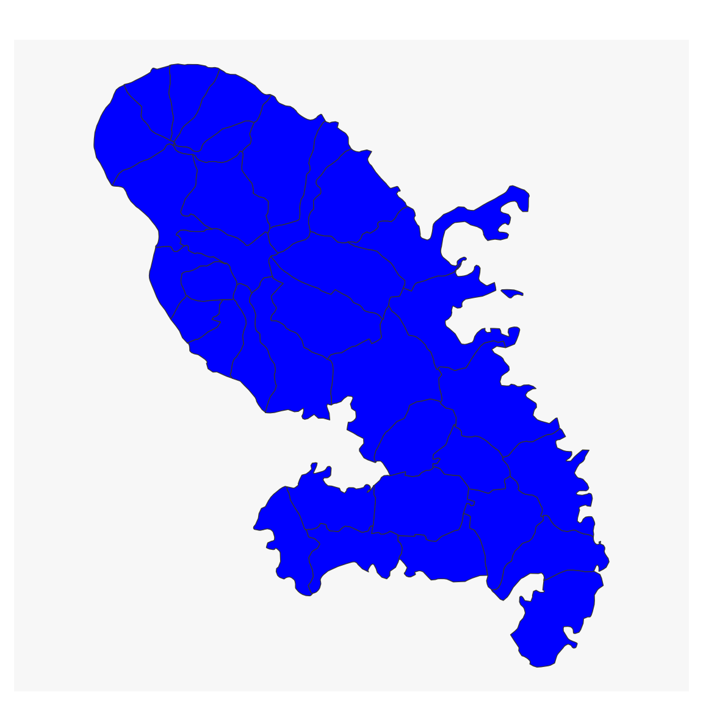

Plot an sf object. This is mostly a wrapper around
plot(st_geometry(x), ...).
Usage
mf_base(
x,
col = "grey80",
border = "grey20",
bg = "white",
cex = 1,
pch = 20,
lwd = 0.7,
lty = 1,
add = FALSE,
...
)Arguments
- x
object of class
sf,sfcorsfg- col
color
- border
border color
- bg
background color
- cex
point size
- pch
pch (point type) for symbols
- lwd
border width
- lty
line or border type
- add
whether to add the layer to an existing plot (TRUE) or not (FALSE)
- ...
further parameters from plot for sfc objects
Examples
library(sf)
#> Linking to GEOS 3.10.2, GDAL 3.4.1, PROJ 8.2.1; sf_use_s2() is TRUE
mtq <- mf_get_mtq()
mf_map(mtq, type = "base")

mf_map(mtq, type = "base", col = "blue")
